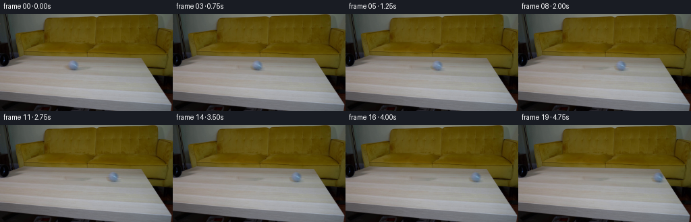
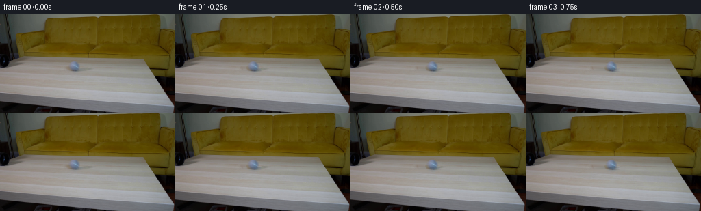

CODING AGENTS AS PIXEL WORLD MODELS
traex/GPT-5.6-Sol · 0024
点击播放 · 原生 RGB 像素
逐轮保存的候选
回放视频、检查图与代码变化。
每份候选均可单独播放。实际图片检查记录在下方工具轨迹中。
候选 01播放与检查图
点击播放 · 原生 RGB 像素
展开代码变化
--- 上一保存版本
+++ 本次保存版本
@@ -0,0 +1,102 @@
+"""Generate the requested locked-camera ball-rolling sequence.
+
+The small moving object is taken from the supplied first frame itself. A
+clean tabletop is reconstructed locally, then the source ball (including its
+contact shadow and native photographic shading) is moved over that plate.
+This keeps the continuation consistent with the low-resolution source image
+without introducing unrelated visual material.
+"""
+
+from pathlib import Path
+
+import cv2
+import numpy as np
+from PIL import Image
+
+import artifact_io
+
+
+W, H = 256, 144
+N = 20
+
+
+def _soft_ellipse(cx, cy, rx, ry, softness=1.0):
+ """Return a soft antialiased ellipse mask in image coordinates."""
+ yy, xx = np.mgrid[:H, :W].astype(np.float32)
+ # Approximate signed distance in pixels, adequate for these small ellipses.
+ q = np.sqrt(((xx - cx) / rx) ** 2 + ((yy - cy) / ry) ** 2)
+ d = (1.0 - q) * min(rx, ry)
+ return np.clip(0.5 + d / max(softness, 1e-4), 0.0, 1.0)
+
+
+def make_clean_plate(source):
+ """Remove the original ball and its very small contact shadow."""
+ # The sphere occupies about x=100..118, y=68..83. Include the soft
+ # contact shadow at its foot, but no more of the tabletop than necessary.
+ hard = np.zeros((H, W), np.uint8)
+ cv2.ellipse(hard, (109, 76), (11, 9), 0, 0, 360, 255, -1,
+ lineType=cv2.LINE_AA)
+ cv2.ellipse(hard, (109, 83), (11, 3), 0, 0, 360, 255, -1,
+ lineType=cv2.LINE_AA)
+ hard = np.where(hard > 20, 255, 0).astype(np.uint8)
+
+ # TELEA follows the existing row-wise tabletop grain better than a flat
+ # color fill. Blend only through a feather around the repaired patch.
+ repaired = cv2.inpaint(source, hard, 3.0, cv2.INPAINT_TELEA)
+ feather = cv2.GaussianBlur(hard.astype(np.float32) / 255.0,
+ (0, 0), 0.65)
+ feather = np.clip(feather[..., None], 0.0, 1.0)
+ plate = source.astype(np.float32) * (1.0 - feather)
+ plate += repaired.astype(np.float32) * feather
+ return plate, feather
+
+
+def generate_frames(source):
+ plate, repair_alpha = make_clean_plate(source)
+
+ # Difference sprite retains every source detail: sphere highlight, darker
+ # lower hemisphere, antialiased silhouette, and contact shadow. Restrict
+ # it to the repair region so no unrelated tabletop texture is translated.
+ residual = (source.astype(np.float32) - plate) * repair_alpha
+
+ frames = [source.copy()] # Contract: frame 00 is byte-for-byte identical.
+
+ # The ball begins at x=109 and arrives immediately before the visible
+ # right edge of the tabletop. A slight physically plausible deceleration
+ # due to rolling resistance is used while preserving continuous motion.
+ total_dx = 99.0
+ for i in range(1, N):
+ u = i / (N - 1)
+ progress = 1.08 * u - 0.08 * u * u
+ dx = total_dx * progress
+ # The tabletop recedes only very slightly along this path.
+ dy = 1.6 * u
+
+ matrix = np.array([[1.0, 0.0, dx],
+ [0.0, 1.0, dy]], dtype=np.float32)
+ moved = cv2.warpAffine(
+ residual, matrix, (W, H), flags=cv2.INTER_CUBIC,
+ borderMode=cv2.BORDER_CONSTANT, borderValue=(0, 0, 0)
+ )
+
+ # Cubic resampling can produce tiny ringing in a difference image;
+ # clipping after compositing keeps all output valid RGB.
+ frame = np.clip(plate + moved, 0, 255).round().astype(np.uint8)
+ frames.append(frame)
+
+ return np.stack(frames, axis=0)
+
+
+def main():
+ case_dir = Path(__file__).resolve().parent
+ source = np.asarray(Image.open(case_dir / "first_frame.png").convert("RGB"),
+ dtype=np.uint8)
+ assert source.shape == (H, W, 3)
+ frames = generate_frames(source)
+ assert frames.shape == (N, H, W, 3) and frames.dtype == np.uint8
+ assert np.array_equal(frames[0], source)
+ artifact_io.save(frames, case_dir)
+
+
+if __name__ == "__main__":
+ main()
候选 02播放与检查图
点击播放 · 原生 RGB 像素


展开代码变化
--- 上一保存版本
+++ 本次保存版本
@@ -40,14 +40,21 @@
lineType=cv2.LINE_AA)
hard = np.where(hard > 20, 255, 0).astype(np.uint8)
- # TELEA follows the existing row-wise tabletop grain better than a flat
- # color fill. Blend only through a feather around the repaired patch.
- repaired = cv2.inpaint(source, hard, 3.0, cv2.INPAINT_TELEA)
+ # The tabletop is nearly planar here and its grain runs horizontally.
+ # Interpolate each row from clean strips immediately to either side. This
+ # avoids letting the dark lower hemisphere contaminate a generic inpaint,
+ # and also retains the gentle vertical light gradient of the real table.
+ repaired = source.astype(np.float32).copy()
+ left = np.median(source[:, 94:98].astype(np.float32), axis=1)
+ right = np.median(source[:, 122:126].astype(np.float32), axis=1)
+ for x in range(98, 122):
+ t = (x - 97.0) / 25.0
+ repaired[:, x] = left * (1.0 - t) + right * t
feather = cv2.GaussianBlur(hard.astype(np.float32) / 255.0,
(0, 0), 0.65)
feather = np.clip(feather[..., None], 0.0, 1.0)
plate = source.astype(np.float32) * (1.0 - feather)
- plate += repaired.astype(np.float32) * feather
+ plate += repaired * feather
return plate, feather
可观测工具轨迹
实际执行的命令与返回图片。
命令 1exit 0
/bin/bash -lc "cat GENERATION_RULES.md && printf '\\n--- PROMPT ---\\n' && cat prompt.txt"
命令 2exit 1
/bin/bash -lc "find . -maxdepth 2 -type f -printf '%p\\n' | sort && printf '\\n--- TOOLS ---\\n' && command -v ffmpeg && command -v ffprobe && python3 - <<'PY' import importlib.util for x in ['PIL','cv2','numpy','scipy','imageio']: print(x, bool(importlib.util.find_spec(x))) PY"
命令 3exit 0
/bin/bash -lc "python3 - <<'PY'
from PIL import Image
im=Image.open('first_frame.png')
print(im.mode, im.size)
print(im.getextrema())
PY"命令 4exit 0
/bin/bash -lc 'cat artifact_io.py'
命令 5exit 0
/bin/bash -lc "python3 - <<'PY'
from PIL import Image
import numpy as np
im=np.array(Image.open('first_frame.png'))
print('mean/std',im.mean((0,1)),im.std((0,1)))
# quantize 16 bins; most frequent
q=(im//16)*16
u,c=np.unique(q.reshape(-1,3),axis=0,return_counts=True)
for i in np.argsort(c)[-25:][::-1]:print(tuple(u[i]), int(c[i]))
# row summaries mean and std
for y in range(0,144,6): print('row',y, np.round(im[y:y+6].mean((0,1)),1),np.round(im[y:y+6].std(),1))
PY"命令 6exit 0
/bin/bash -lc "python3 - <<'PY'
from PIL import Image
import numpy as np
A=np.array(Image.open('first_frame.png')).astype(float)
# grayscale ASCII 64x36, contrast spread
G=A.mean(2)
chars='@%#*+=-:. '
for y in range(0,144,4):
s=''
for x in range(0,256,4):
v=G[y:y+4,x:x+4].mean(); s+=chars[min(9,int(v/180*10))]
print(s)
PY"命令 7exit 0
/bin/bash -lc "python3 - <<'PY' import importlib.util for x in ['PIL','cv2','numpy','scipy','imageio','skimage','matplotlib']: print(x, bool(importlib.util.find_spec(x))) PY command -v ffmpeg || true command -v ffprobe || true"
命令 8exit 0
/bin/bash -lc "python3 - <<'PY'
from PIL import Image
import numpy as np
A=np.array(Image.open('first_frame.png'))
# print 8x4 block avg RGB symbols based categories for y 48+
for y in range(48,144,4):
s=''
for x in range(0,256,4):
c=A[y:y+4,x:x+4].mean((0,1)); r,g,b=c; v=c.mean()
if v<25:z='K'
elif v<50:z='k'
elif v<75:z='D'
elif v<100:z='d'
elif v<125:z='m'
elif v<150:z='l'
elif v<175:z='L'
else:z='W'
# colors
if r-b>45 and g-b>30: z=z.lower() # warm lowercase
s+=z
print(f'{y:03}',s)
PY"命令 9exit 0
/bin/bash -lc "python3 - <<'PY'
from PIL import Image
import numpy as np
A=np.array(Image.open('first_frame.png'))
# every 8px point samples RGB around image lower region
for y in range(56,137,8):
print('\\ny',y)
for x in range(0,256,16): print(f'{x}:{tuple(A[y,x])}',end=' ')
print()
PY"命令 10exit 0
/bin/bash -lc "python3 - <<'PY'
import cv2, numpy as np
from PIL import Image
A=np.array(Image.open('first_frame.png'))
# blue anomaly components B-R > thresholds
for t in [5,10,15,20]:
m=((A[:,:,2].astype(int)-A[:,:,0].astype(int)>t)&(A.mean(2)>35)).astype('uint8')
n,L,st,cent=cv2.connectedComponentsWithStats(m,8)
print('\\nt=',t)
for i in np.argsort(st[1:,4])[-12:][::-1]+1:
if st[i,4]>4: print(st[i].tolist(),np.round(cent[i],1).tolist())
# near-neutral dark object components in table y55:115
PY"命令 11exit 0
/bin/bash -lc "python3 - <<'PY'
from PIL import Image
import numpy as np
A=np.array(Image.open('first_frame.png'))
# symbolic exact 2x2 averages crop x90:135 y55:95; categorize hue+lum
for y in range(54,96,2):
s=''
for x in range(86,140,2):
c=A[y:y+2,x:x+2].mean((0,1));r,g,b=c;v=c.mean()
if b-r>18:z='B'
elif b-r>8:z='b'
elif r-b>25:z='w'
elif v<50:z='#'
elif v<90:z='D'
elif v<120:z='d'
elif v<145:z='m'
elif v<165:z='l'
else:z='L'
s+=z
print(f'{y:03}',s)
PY"命令 12exit 0
/bin/bash -lc "python3 - <<'PY'
from PIL import Image
import numpy as np
A=np.array(Image.open('first_frame.png'))
# symbols crop left x0:70, y0:110 in 2x2 blocks
for y in range(0,112,2):
s=''
for x in range(0,72,2):
c=A[y:y+2,x:x+2].mean((0,1));r,g,b=c;v=c.mean()
if b-r>12:z='B'
elif r-b>40:z='w'
elif r-b>15:z='o'
elif v<20:z='@'
elif v<40:z='#'
elif v<70:z='D'
elif v<100:z='d'
elif v<130:z='m'
elif v<155:z='l'
else:z='L'
s+=z
print(f'{y:03}',s)
PY"命令 13exit 0
/bin/bash -lc "python3 - <<'PY'
from PIL import Image
import numpy as np
A=np.array(Image.open('first_frame.png'))
for y in range(66,87):
print(y, end=' ')
for x in range(98,122):
r,g,b=map(int,A[y,x]); d=b-r
print(' .:-=+*#%@'[min(9,max(0,(d+10)//5))],end='')
print()
print('\\nRGB rows')
for y in range(68,84,2):
print('y',y, [(x,tuple(map(int,A[y,x]))) for x in range(100,119,2)])
PY"命令 14exit 0
/bin/bash -lc "python3 - <<'PY'
import cv2,numpy as np
A=cv2.imread('first_frame.png')[:,:,::-1]
# dark component map 4px around left
for y in range(0,112,4):
print(f'{y:03}',end=' ')
for x in range(0,120,4):
z=A[y:y+4,x:x+4].mean((0,1,2)); print('@#Ddmlo.'[min(7,int(z/180*8))],end='')
print()
PY"命令 15exit 0
/bin/bash -lc "python3 - <<'PY'
from PIL import Image
import numpy as np
A=np.array(Image.open('first_frame.png'))
for y in [64,68,72,76,80,84,88,92,96,104,112]:
print('\\ny',y)
for x in range(180,256,4): print(f'{x}:{A[y,x].mean():.0f}',end=' ')
PY"命令 16exit 0
/bin/bash -lc "python3 - <<'PY'
from PIL import Image
import numpy as np
A=np.array(Image.open('first_frame.png'))
# estimate color discontinuity horizontal at y70-90
for y in range(65,96):
g=np.linalg.norm(A[y,1:].astype(float)-A[y,:-1],axis=1)
ids=np.argsort(g[180:])[-5:]+180
print(y, sorted([(int(x),round(g[x],1)) for x in ids]))
PY"命令 17exit 0
/bin/bash -lc "python3 - <<'PY'
from PIL import Image
import numpy as np
A=np.array(Image.open('first_frame.png'))
for y in range(68,86):
print(y,' '.join('%3d/%3d/%3d'%tuple(A[y,x]) for x in range(99,121)))
PY"命令 18exit 0
/bin/bash -lc "python3 generate.py && python3 - <<'PY'
from pathlib import Path
from PIL import Image
import numpy as np
A=np.array(Image.open('first_frame.png'))
fs=[np.array(Image.open(f'frames/{i:02d}.png')) for i in range(20)]
print('count',len(fs),'shape',fs[0].shape,'dtype',fs[0].dtype)
print('frame00 exact',np.array_equal(A,fs[0]))
print('changed pixels:',[int(np.any(fs[i]"'!=fs[max(0,i-1)],2).sum()) for i in range(20)])
# Residual extents against reconstructed quasi-static frame 19? summarize strongest blue regions / changes.
for i in [0,1,2,4,7,10,13,16,19]:
D=np.max(np.abs(fs[i].astype(int)-fs[0].astype(int)),2)
ys,xs=np.where(D>8)
print(i, '"'delta bbox', (xs.min(),ys.min(),xs.max(),ys.max()) if len(xs) else None, 'delta>8',len(xs))
print('outputs',[(p.name,p.stat().st_size) for p in map(Path,['pixels.npz','inspection.png','transition_check.png','index.html'])])
PY"命令 19exit 0
/bin/bash -lc "python3 - <<'PY'
import generate
from PIL import Image
import numpy as np
A=np.array(Image.open('first_frame.png'))
P,_=generate.make_clean_plate(A)
for y in range(68,86):
vals=[]
for x in [96,98,100,104,108,112,116,120,122]:
vals.append('%d'%P[y,x].mean())
print(y,' '.join(vals))
PY"命令 20exit 0
/bin/bash -lc "python3 generate.py && python3 - <<'PY'
from pathlib import Path
from PIL import Image
import hashlib, numpy as np
import generate
A=np.array(Image.open('first_frame.png'))
F=np.stack([np.array(Image.open(f'frames/{i:02d}.png')) for i in range(20)])
P,_=generate.make_clean_plate(A)
assert F.shape==(20,144,256,3) and F.dtype==np.uint8
assert np.array_equal(F[0],A)
Z=np.load('pixels.npz')['pixels']; Q=Z.transpose(2,0,1)
D=np.empty_like(F); D[:,:,:,0]=(Q>>16)&255; D[:,:,:,1]=(Q>>8)&255; D[:,:,:,2]=Q&255
assert np.array_equal(D,F)
print('shape/dtype',F.shape,F.dtype,'frame00 exact',np.array_equal(F[0],A),'npz exact',np.array_equal(D,F))
print('frame00 sha256',hashlib.sha256(F[0].tobytes()).hexdigest())
print('source sha256 ',hashlib.sha256(A.tobytes()).hexdigest())
print('clean patch RGB mean',np.round(P[70:84,100:120].mean((0,1)),2), 'neighbors',np.round(np.r_[A[70:84,92:98],A[70:84,122:128]].reshape(-1,3).mean(0),2))
print('temporal MAD',np.round(np.abs(np.diff(F.astype(float),axis=0)).mean((1,2,3)),3).tolist())
ygrid,xgrid=np.indices((144,256))
for i in range(20):
xexp=109+99*(1.08*i/19-.08*(i/19)**2)
m=(F[i,:,:,2].astype(int)-F[i,:,:,0].astype(int)>13)&(ygrid>=65)&(ygrid<92)&(np.abs(xgrid-xexp)<12)
yy,xx=np.where(m)
print(f'{i:02d} expected={xexp:6.2f} detected={xx.mean():6.2f} n={len(xx)}')
print('artifacts', {p.name:p.stat().st_size for p in [Path('pixels.npz'),Path('inspection.png'),Path('transition_check.png'),Path('index.html')]})
PY"保存候选 2 份；完成命令 20 次；可验证图片返回 0 张。原始 API 响应与完整日志保留在本地。